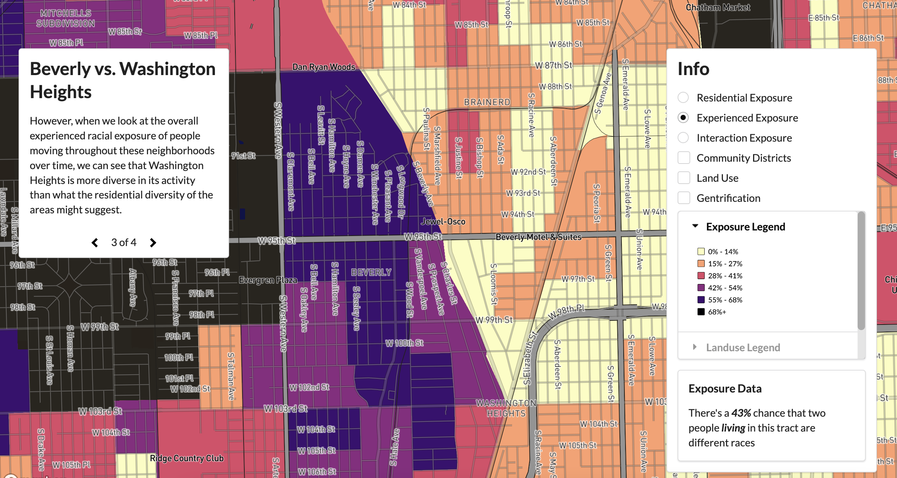

Gentrification and Social Mixing
About the Project
In the winter of 2022, I applied to a research opportunity at the University of Chicago looking for a research assistant to help with a project titled “Gentrification and Social Mixing.” The data leveraged cell phone usage patterns in Chicago to give a more granular look at the effects of gentrification on the mixing of people of different races. In particular, the opportunity to visualize this dataset was interesting to me, so I sent away my application.
UX and Web Development Goals
Come January, I began working with my mentor to lay out a timeline for completing a website, as well as highlight the main goals of the project. From the initial ideation phase, we came to a conclusion: The design should contextualize the data you're seeing on the map and situate it within a broader story of gentrification.
UX Solutions
To highlight the map content, I opted for the map to fill the entire screen, while leaving two
panels which would contain the relevant information and controls to adjust the map view. This
created two distinct areas, one for the story and one for controls, while obstructing the least
amount of map view.
To tackle our first goal, we created a storyline based way of moving through the map space.
Different cards take you to different parts of the map and activate different layers, while
providing context for the information you are seeing. In this way, the user can focus on analyzing
the data presented without having to manipulate the map space themselves. However, for users who
want more control over the view, the right side enables them to toggle all layers and borders, as
well as provides a collapsible legend to fit within a readable area.
A final feature to help contextualize the data was the use of the hover feature. By putting the
data in a sentence, this enabled users to better understand what the data was showing them, and
understand the differences between layers.
In the original design of the layout, the panels were semi-opaque and the background map was
shades of grey, making contrast difficult and the text less readable. Later changes involved
adjusting the base map to have higher contrast and increasing the opacity of the panels to
create sufficient contrast to improve readability.
Web Development
This project was built on Mapbox GL JS and Fomantic UI. At this point I was new to web design,
having just taken broader computer science classes, and thus had a lot of learning to do to build
anything at all. However, with some help from past professors and Wenfei, I was able to turn my
wireframes into the website itself.
Learnings from this website to take to the next project would be usability on mobile, currently
the website is only usable on desktop, and adding a buffering page to create a better user experience
when the website is first loading rather than waiting for all the layers to populate.
Team
Allie Chu: UI/UX Designer and Web Developer
Wenfei Xu: Research Coordinator
Presented at the Spring Undergraduate Research Symposium at the University of Chicago

An early mockup of the map in the original color scheme.

Here on story pane #2, the map highlights Residential Exposure.
On the next pane, you now get the view of Experienced Exposure, which tells a different story.